Charte graphique · version prototype · octobre 2026
Sprooch Coach
Application de préparation à l'oral du Sproochentest. Une colonne unique pensée pour le téléphone, aux couleurs du drapeau luxembourgeois, où l'on répond toujours à voix haute.
1. Principes
L'oral d'abordL'action principale de chaque écran est un grand bouton bleu avec un micro : « Répondre à voix haute ». Pas de saisie écrite.
Le luxembourgeois en vedetteTout texte en luxembourgeois est en Young Serif, plus grand ; le français reste en Figtree, plus discret, souvent masqué.
La progression visibleTrois anneaux en haut, une barre par thème, des statuts colorés : on voit d'un coup d'œil ce qui reste à faire.
Calme et lisibleFond bleu-gris très pâle, cartes blanches, une seule couleur d'action. Le drapeau n'apparaît qu'en bandeau fin.
2. Couleurs
Chaque couleur a un rôle unique. Le vert, l'orange et le bleu portent un sens (réussi, en cours, action), on ne les utilise pas pour décorer.
Thème clair
Fond--bg #F3F7FA
Surface--surface #FFFFFF
Texte--fg #14212B
Texte secondaire--muted #56687A
Action, A2, mots clés--accent #0082B8
Réussi, maîtrisé--ok #1D8556
En cours, à revoir--warn #B4700A
Bordures, pistes--line #D8E2E9
Thème sombre (suivi automatiquement selon le téléphone)
Fond#0D151B
Surface#15212A
Texte#E6EDF2
Texte secondaire#94A6B4
Action#4FC2EE
Réussi#5ACF97
En cours#F2B44A
Bordures#253542
Drapeau (bandeau de 6 px en haut de l'écran uniquement)
#EF3340
#FFFFFF
#00A3E0
3. Typographie
Young Serif · titres et luxembourgeois
Moien, wéi geet et Iech?
Serif chaleureux et lisible, gère bien ë, é, ä. Toujours en taille normale (400), jamais en gras forcé.
Figtree · interface et français
Répondre à voix haute
Sans-serif net, 4 graisses : 400 texte, 500, 600 boutons et titres de cartes, 700 actions principales.
Usage
Police
Taille
Graisse
Titre de l'app
Young Serif
32 px
400
Mot à dire (quiz)
Young Serif
30 px
400
Question en luxembourgeois
Young Serif
20 px
400
Mot du lexique (mot clé en bleu, gras)
Young Serif
17 px
400 / 700
Texte courant, boutons
Figtree
16 px
400 / 600–700
Traduction, légendes, compteurs
Figtree
13–15 px
400, gris
Étiquettes (« 1. CHOISISSEZ UN THÈME »)
Figtree capitales, espacées
12 px
600
4. Composants
Répondre à voix hauteVoir la traductionA1A2
À voirEn coursMaîtrisée
À voirEn coursMaîtrisée
Je l'ai bien ditÀ retravailler
A2
Firwat sidd Dir op Lëtzebuerg komm?
Pourquoi êtes-vous venu(e) au Luxembourg ?
Questions maîtrisées
Exercices validés
Mots clés
Avertissement : fond orangé pâle, texte orange foncé. Réservé aux limites du prototype et aux contenus à faire relire.
Élément
Règle
Cartes (chapitres, questions)
Fond surface, bordure 1 px, rayon 14 px, pas d'ombre.
Bouton principal
Un seul par écran : plein, bleu, rayon 12 px, largeur totale sur téléphone, icône micro.
Boutons secondaires
Contour gris, texte bleu, rayon 8 px.
Statut d'une question
Trois boutons segmentés : À voir (gris) → En cours (orange) → Maîtrisée (vert).
Niveau
Pastille A1 grise (base), A2 bleue (niveau de l'examen).
Progression
Anneaux de 76 px (vert questions, bleu exercices, orange mots clés) ; barre de 5 px par thème.
Focus clavier
Contour bleu 2 px, décalé de 2 px. Animations coupées si l'utilisateur réduit les mouvements.
5. Structure des écrans
Une seule colonne de 720 px maximum, marge latérale de 16 px, tout empilé verticalement. Trois onglets partagent le même en-tête.
6. Écrans (thème clair)
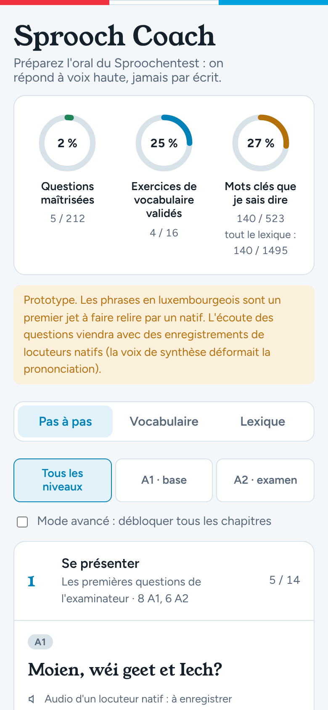
Accueil : anneaux et parcours
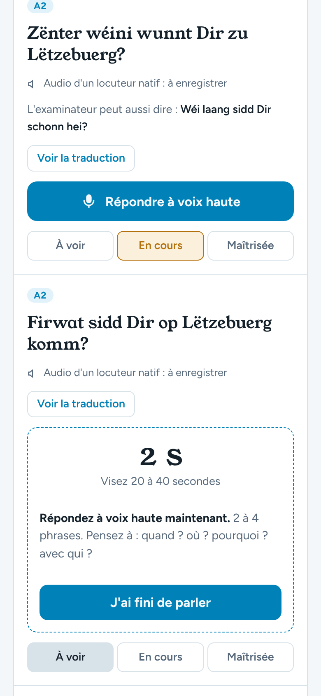
Réponse orale chronométrée
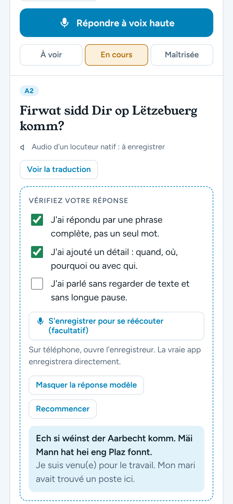
Vérification et réponse modèle
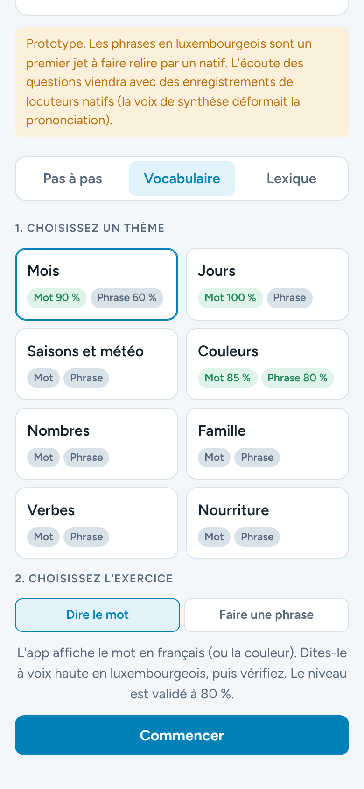
Vocabulaire : choix du thème
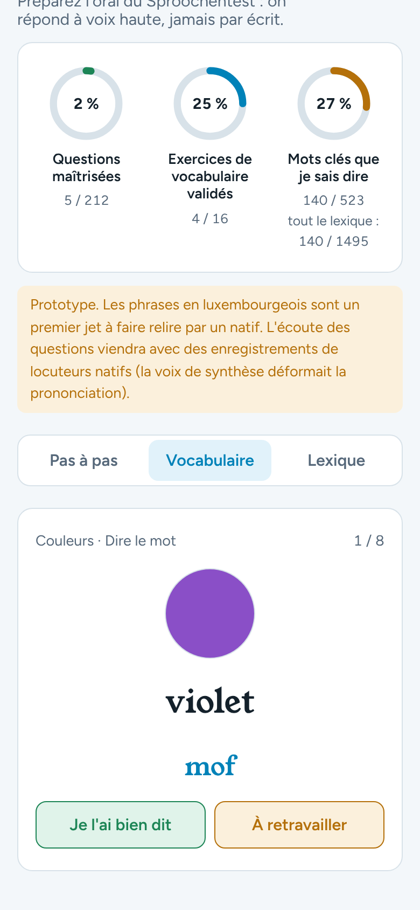
Dire le mot et s'auto-évaluer
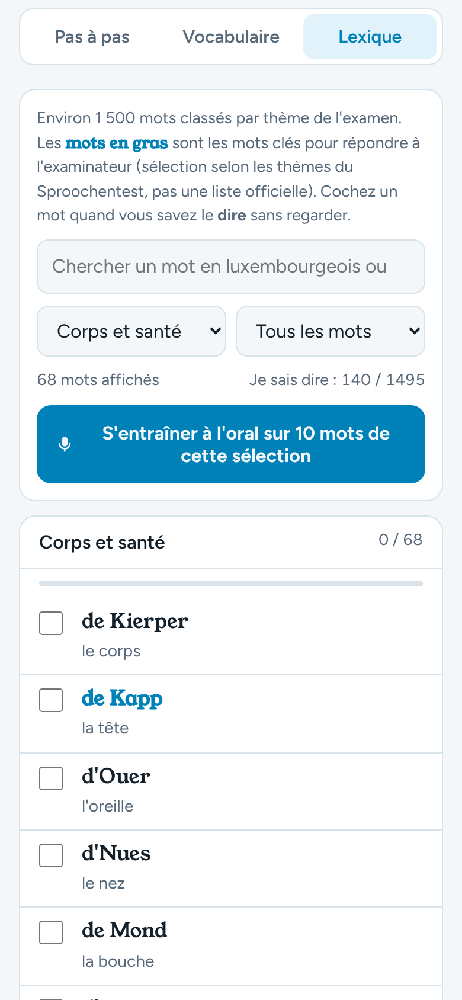
Lexique par thème
7. Écrans (thème sombre)
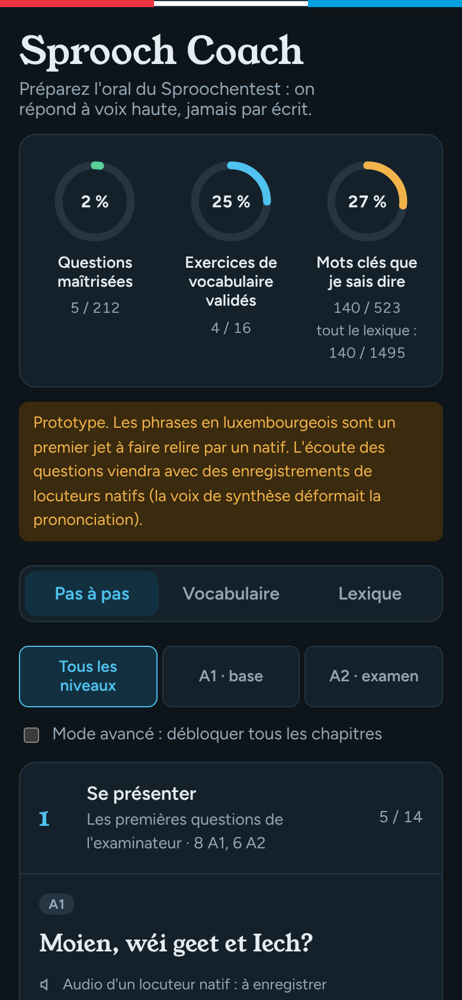
Accueil
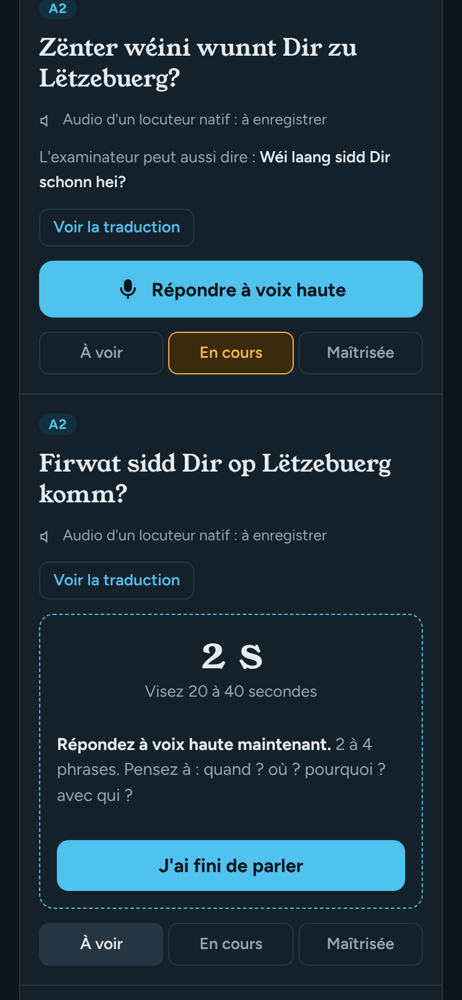
Réponse orale
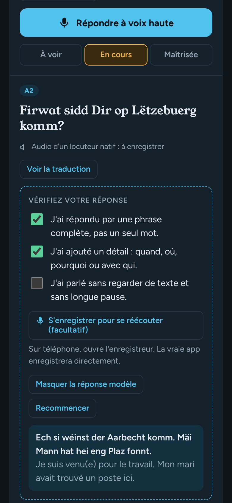
Vérification
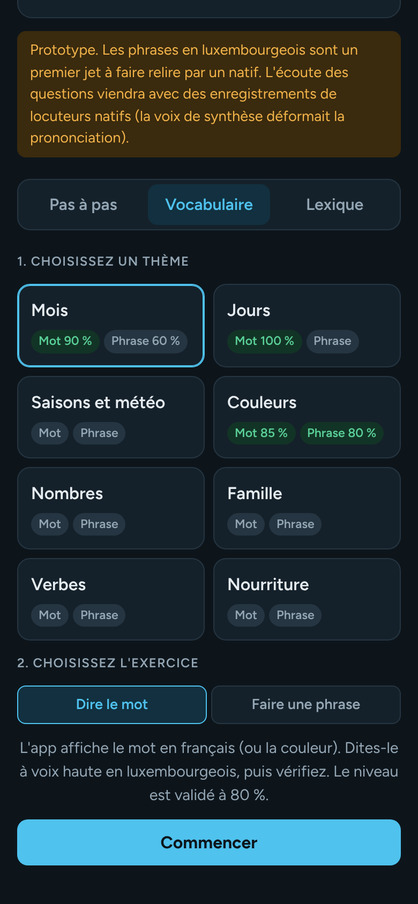
Vocabulaire
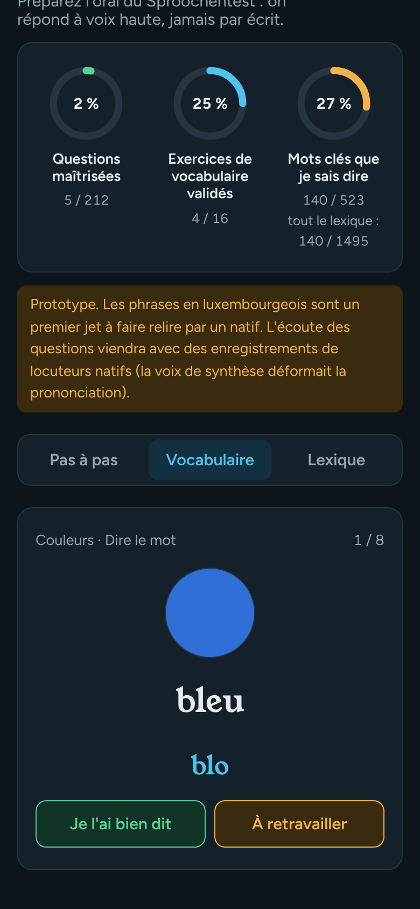
Dire le mot
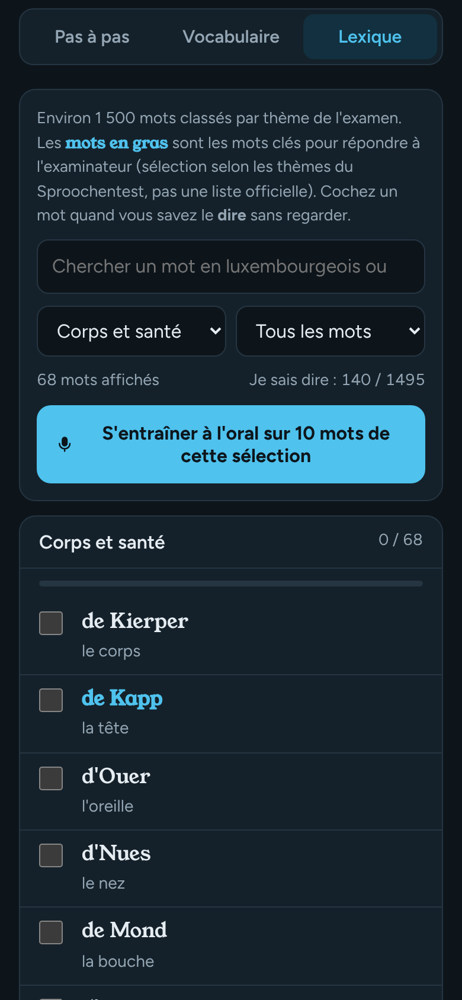
Lexique
Polices Young Serif et Figtree sous licence SIL Open Font License (fichiers dans le dossier « fonts »). Variables réutilisables : sprooch-coach-tokens.css.